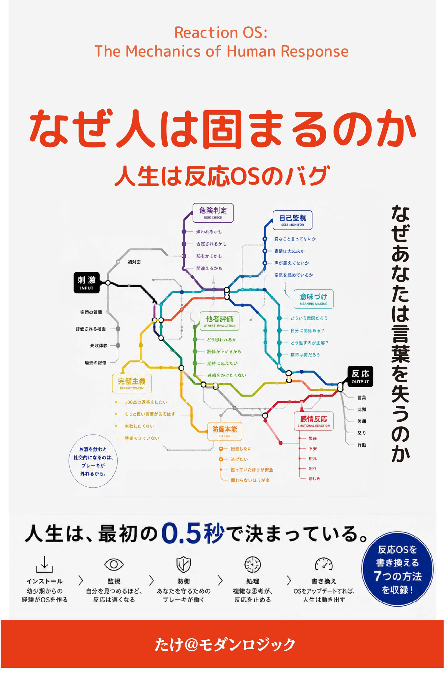

なぜ人は固まるのか
人生は、反応OSのバグだった。
人生は、最初の0.5秒で決まっている。
会議で質問された瞬間、頭が真っ白になる。飲み会の帰り道、ひとりで反省会が始まる。なのに、お酒が入ると急に話せるようになる自分がいる。 もしそうだとしたら、足りないのは「話す能力」ではない。本書は、無意識のうちに働く「反応OS」という視点から、固まる理由の正体を解き明かす一冊である。
著者：たけ＠モダンロジック ／ Kindle版

本書の紹介動画
こんな感覚、ありませんか？
性格のせいだと思っていたことが、実は「反応」の仕組みだったとしたら
会議で質問された瞬間、頭の中にあったはずの言葉が出てこない
飲み会の帰り道、ひとりで「なんで黙ってしまったんだろう」と反省会が始まる
オンライン商談、カメラ越しの沈黙がやけに長く感じる
家族や親友の前では饒舌なのに、初対面だと言葉に詰まる
お酒が入ると、急に自分が別人のように話せることに違和感がある
「自分はコミュニケーション能力が低いのだろうか」と、繰り返し考えてしまう
足りないのは、能力ではなかった。
会話力＝話す能力－自己防衛。本書はこの一つの式で、固まる理由を説明する
能力不足という思い込み（多くの人がハマる罠）
「自分は口下手だ」と信じ込み、話し方の本を読み続けてしまう
- ✓話し方の本を読む、雑談術のセミナーに通う
- ✓それでも初対面や評価される場面では変わらない
- ✓「性格だから仕方ない」と諦める
- ✓頭ではわかっているのに、言葉が出ない自分を責め続ける
反応OSという視点（本書のアプローチ）
刺激から言葉が出るまでには、目に見えない処理が走っている
- ✓刺激→意味づけ→危険判定→自己監視→感情→防衛→反応、七つの通過点
- ✓邪魔しているのは能力ではなく「自己防衛」というマイナス項
- ✓防衛の感度は後天的に「インストール」されたものだから書き換えられる
- ✓鍛えるべきは話術ではなく、不要なフィルターを減らすこと
反応OSは、誰が作ったのか
性格だと思っていたものの多くは、人生の中で少しずつインストールされたプログラムだった
親というインストーラー
「失敗するな」「恥ずかしいことはやめて」――愛情から出た言葉が、危険判定の基準値を書き換えていく。
学校・会社という追加アップデート
一度の強烈な失敗より、百回の小さな「変な顔をされた」の方が、強固な回路を作る。
SNS・恋愛という新しい入力経路
評価が可視化され、記録が残り続ける環境が、危険判定をさらに過敏にする。
成功体験と失敗体験の非対称性
一度の強烈な失敗は、十回の成功体験よりも強く、反応パターンに刻まれる。
反応を止める五つのフィルター
刺激が言葉に変わるまでに、必ず通過する五つの関門。多くの人は、このうち一つか二つが突出して強い
危険判定Risk Check
これを言って大丈夫か。安全か危険かを、最初に計算する。
自己監視Self-Monitor
自分は今どう見えているか。声・表情・見え方を確認し続ける。
完璧主義Perfectionism
理想の発言と比較し、六〜七割の出来では出力を止めてしまう。
他者評価Social Rank
浮いていないか、評価が下がらないか。集団内の序列を計算する。
防衛本能Defense
黙る・そらす・ごまかす・取り繕う。最終的な出力を書き換える。
こんな方におすすめです
目次
はじめに・全7章・終章・特別収録で構成
あなたは話せない人ではない。反応できないだけだ。
会話力＝話す能力－自己防衛。本書の中心にある式を提示する
人は「反応」でできている
反応とは何か／「反応OS」という考え方／刺激から言葉が出るまでの七つの通過点
あなたの反応は誰が作ったのか
親というインストーラー／学校・友達・会社という追加アップデート／SNS・恋愛という新しい入力経路
反応を止める五つのフィルター
危険判定・自己監視・完璧主義・他者評価・防衛本能／五つは独立していない、直列している
なぜ人は固まるのか
反射神経には三つの種類がある／反応速度＝思考速度ではない／反応が速い人は「頭がいい」のではない
照れの正体
「うれしい」と「見られたくない」の同時発火／照れ・恥・謙遜・シャイの境界線
酒を飲むとなぜ話せるのか
自己監視・危険判定・完璧主義が緩む理由／会話力＝話す能力－自己防衛
反応OSを書き換える
安心を増やす・想定を増やす・即興練習・失敗体験・自己監視を弱める、五つのレベル
人生は反応で決まる
反応は性格ではない、設計できる／「反応の設計図」を手にしたあなたへ
反応OS診断テスト（20問）
自分がどのフィルターに強く支配されているかを、20の質問でセルフチェック
必要なのは、話術ではない。
防衛が作動しない状態を、どうつくるかである。
会話力＝話す能力－自己防衛。本書は、心理学・脳科学の知見を一つの理論に統合し、反応OSを書き換える具体的な方法まで示していく。
巻末には20問の反応OS診断テストも収録。